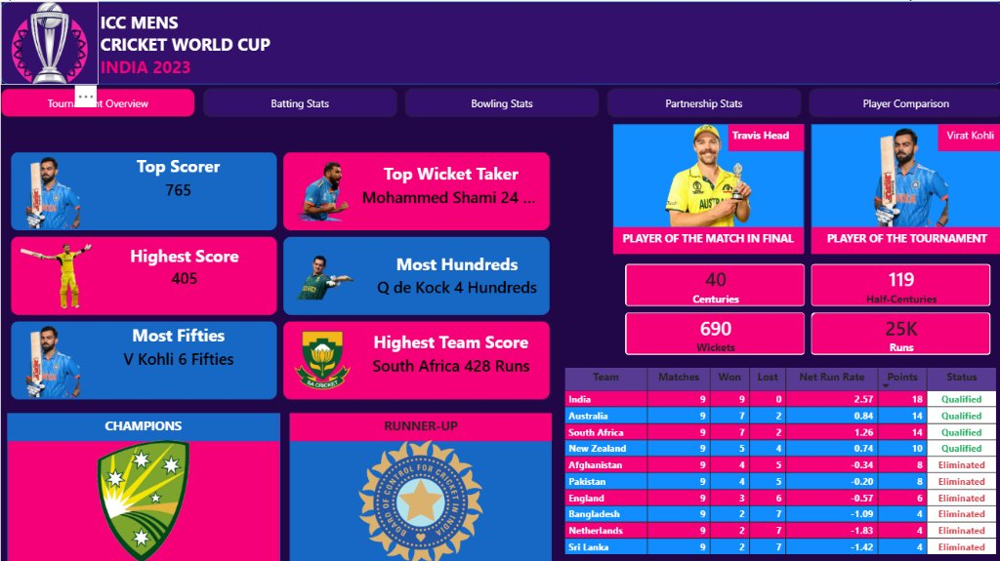

ICC Cricket World Cup 2023 Analysis
End-to-End Sports Analytics & Tactical Intelligence Platform
ICC Men's Cricket World Cup 2023 Analysis is a comprehensive sports analytics and business intelligence project. It aggregates match records, ball-by-ball delivery telemetry, and tournament standings across 48 matches, turning raw cricket data into deep, actionable insights on team momentum, player performance, and match phase dynamics.
Cricket broadcast and post-match commentary focus on static aggregate scores without explaining underlying tactical drivers. Analysts lacked clear data on phase-wise scoring rates, bowler death-over economy, and the statistical impact of dew on chasing teams across Indian venues.
Built an end-to-end analytics pipeline: cleaned 26,118 delivery records with Python, engineered match phases (Powerplay, Middle, Death), modeled a normalized MySQL database for complex queries, and designed an interactive Power BI dashboard with dynamic slicers and KPI cards.
KEY FEATURES
TECH STACK
ARCHITECTURE
4-Stage Data Pipeline: Raw Telemetry Ingestion (matches & 26,118 deliveries) → Python ETL (Pandas data cleaning & match_phase feature engineering) → MySQL Relational DB (normalized schema, CTEs, Window Functions) → Power BI Presentation (star schema, custom DAX measures, dynamic slicers).
⚡ CHALLENGES FACED
Designing composite keys (match_id, inning, over_num, ball_num) to enforce uniqueness across 26,118 deliveries without double-counting extras; formulating SQL CTEs to calculate accurate phase-wise run rates during shortened innings; and standardizing stadium naming discrepancies across Indian state jurisdictions.
MY CONTRIBUTION
Extracted and cleaned the delivery datasets in Pandas, engineered domain features (over numbers and match phases), designed the normalized relational schema in MySQL, authored production SQL analytical queries, and built the complete interactive Power BI dashboard with KPI scorecards and tournament standings.